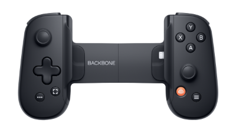
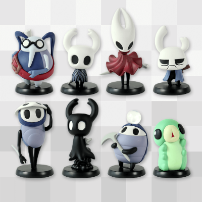

I understand. Life can get really hectic and anything not that important as of right now will always get pushed into the back of your mind, left to sit on the backburners of the stove. However, don’t be confused when the item you’re trying to look for on December 23rd is sold out! And I implore you to give me any information about the person when you ask me “what should I get them?”. I’m not a mind reader, but I want to help.
So I think I need to have a repertoire of rapid fire questions I can ask to the shopper so that the gift they select is one, in store or makes it to the location in time if shipped, and two, can be used by the gift receiver in question. And because Google has a section dedicated to shopping (that I use frequently), I’m curious as to how Gemini responds.
The search
I gave Gemini the vague prompt of i’m a shopper frantically searching for a last minute gift. Gemini started off with four questions:
1. Who is the gift for? (e.g., sister, coworker, child, significant other)
2. What is their age range or interests? (e.g., loves cooking, enjoys tech, is a big reader)
3. What is your budget? (e.g., under $50, around $100)
4. Do you need it to be something you can get instantly? (e.g., a digital gift card or experience) or something you can pick up locally today?.
I decided that this imaginary gift would be for my brother who is currently 16 years old with a budget of under $30. I’d rather it be something I can pick up locally or an experience rather than a gift card. From this, Gemini gave me five items and four experiences but without asking for their interests or hobbies. Because of that, I follow up with his likes: Pokémon, Hollow Knight, and go karting.
A more accurate search
From this, Gemini gave:
🎮 Gaming & Fandom Ideas (Local Pickup, Under $30)
| Idea | Why it Works | Where to Pick Up Locally Today |
|---|---|---|
| Pokémon TCG Booster Box/Tin | Pokémon cards are always a hit. A booster bundle, collection tin, or a specific expansion pack is a great consumable gift that feels exciting to open. | Target, Walmart, GameStop |
| “Hollow Knight” or “Pokémon” Funko POP! Figure | Funko POP! figures are inexpensive collectibles (often $10-$15) that let him display his fandom. | Target, Walmart, GameStop |
| Gaming-Themed Socks/Beanie/Mug | Look for a licensed pair of socks or a quality mug featuring his favorite games. Socks (often under $15) or a mug (under $20) are practical and fun. | Hot Topic, GameStop, Target (in the electronics section) |
| Controller/Headset Stand | A small, practical stand to display his gaming gear. Many retailers carry simple, inexpensive versions (under $25) to help organize his setup. | Best Buy, GameStop |
🏎️ Experience Ideas (Instant Booking/Purchase, Under $30)
| Idea | Why it Works | How to Get it Instantly |
|---|---|---|
| The “Ultimate Go-Karting Race” | Since he loves go-karting, buy him a single race ticket (often $15-$25 per race). Present it with a printout of the track’s schedule or a small toy race car to make it feel more exciting than just cash. | Check your local indoor or outdoor go-kart track website to buy a voucher/e-ticket. |
| Arcade Play Card | Load a card with $20-$30 credit for a local arcade (like Dave & Buster’s, Round1, or a locally owned place) so he can try out new games. | Purchase the card at the counter of your nearest arcade/entertainment center. |
My Top Local Suggestion:
The Pokémon TCG Booster Pack/Tin or a Funko POP! of a character from Hollow Knight or Pokémon is the most reliably exciting gift in this budget that you can pick up right now at any major retailer.
A good choice?
In my opinion, the gift ideas are decent; not the worst, but not the best. I might have gotten him something controller related or a Hollow Knight figure, but not what they suggest. I would have selected maybe a backbone for the phone, or a blanket with the Korok. But Funko POP! is a very nice idea, especially with the DIY one you can get since they have no Hollow Knight series. But if all else fails, I go to crochet a plush. And I like the arcade idea, both him and I enjoy getting tickets and winning prizes. The race karting option is not as appealing, as presenting a small toy race car at his age is so funny to me. If I were to do that, I would just bring him and some friends to go go-kart somewhere.
 
Conclusion
And so after then asking Gemini what questions should i ask as someone in retail when a shopper is trying to get a last minute gift?, I was given these options:
- “Who are we shopping for today?” (Helps you determine age and relationship).
- “What is the occasion?” (Is it a ‘big’ birthday, a ‘small’ thank-you, or a holiday?).
- “On a scale of 1 to 10, how ‘picky’ is this person?” (This tells you if you should suggest a safe bestseller or something unique/niche).
- “What do they do on a Sunday afternoon?” (This is better than “what are their hobbies?” because it prompts a specific image of the person—e.g., “Oh, he’s usually gaming” or “She’s usually out hiking”).
- “Is there a brand or a game they are currently obsessed with?” (Great for gamers or fans of specific franchises).
- “Are they a ‘gadget’ person or an ‘experience’ person?” (Helps you decide between a physical item or a ticket/voucher).
- “Do you have a target budget you’d like to stay under?” (Phrasing it as “stay under” feels more helpful and less like a sales tactic).
- “Does it need to be ready to go right now, or do you have time to put it together?” (If they say “now,” point them toward pre-made gift sets or bundles).
- “Are you looking for something they need or something they’d never buy for themselves?” (This helps distinguish between practical gifts and luxury treats).
Categorized into profile, interest, and logistics questions, I’d say these will relieve the stress and pressure from the both of us.